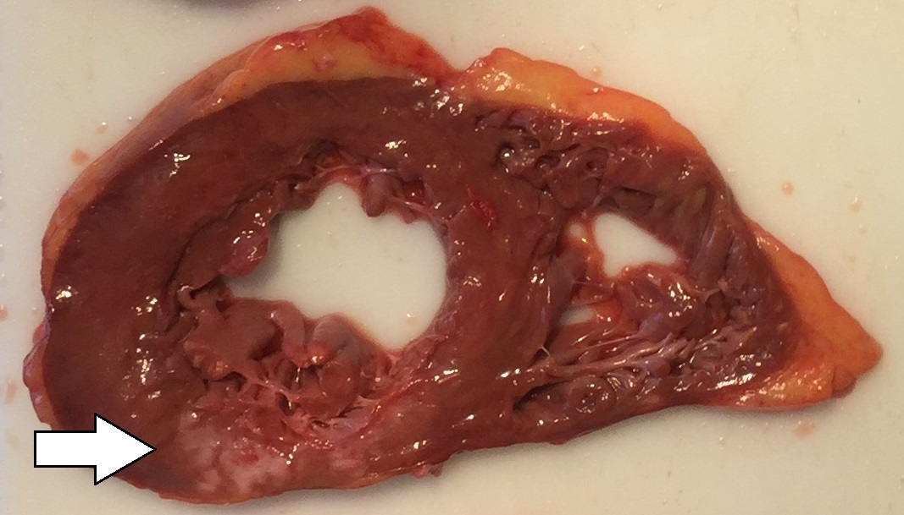
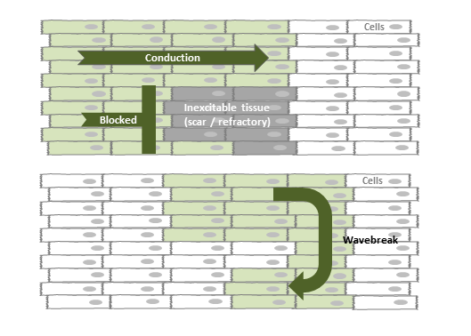
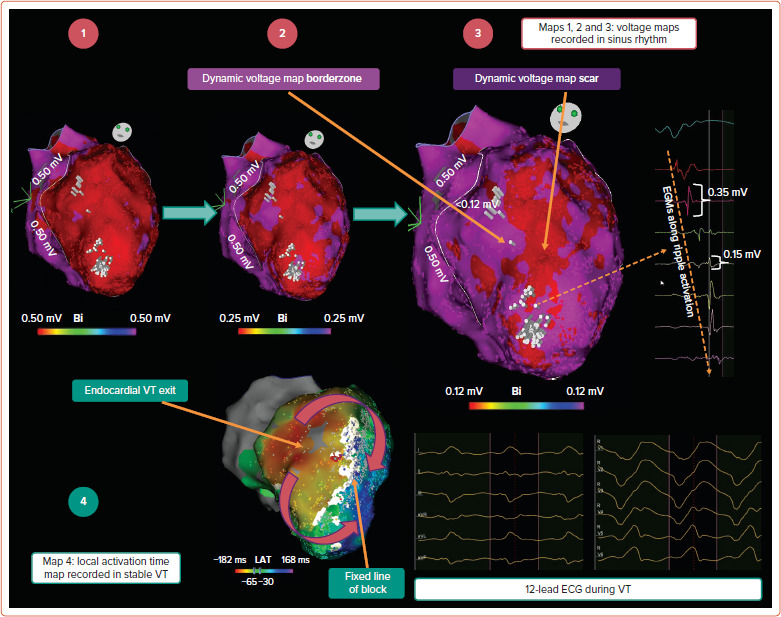
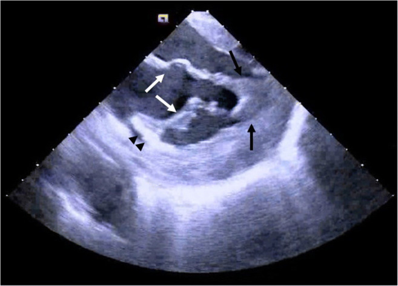
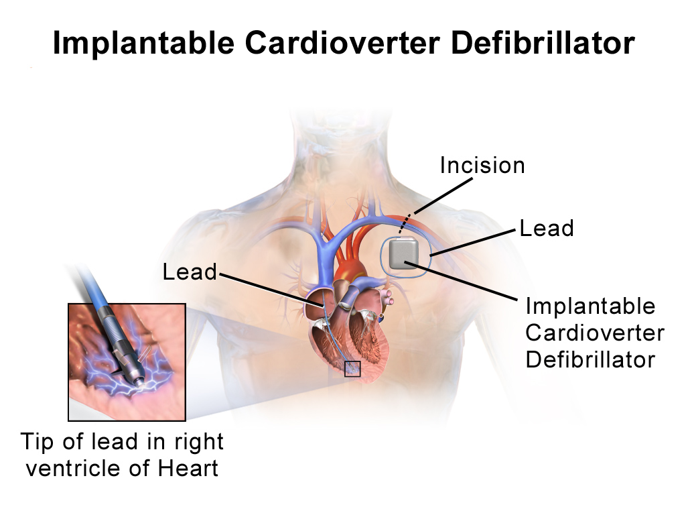

Pictures & Pathology
See the substrate for VT: scar tissue, reentry circuits, EP maps, and the devices that treat it.
The Scar: Where VT Lives
Most monomorphic VT in adults originates from scar tissue left behind after a myocardial infarction. The scar is the stage; the reentry circuit is the actor.

Gross Pathology: Post-MI Scar
A cross-section of the left ventricle showing a healed myocardial infarction. The pale, thin area is scar tissue (fibrosis) that replaced dead heart muscle. The surrounding dark red tissue is normal, living myocardium.
The Circuit: How Reentry Works

Reentry Circuit Diagram
A schematic showing how a reentry circuit forms. An electrical impulse encounters a region with two pathways: one conducts normally, the other conducts slowly (through scar). The impulse blocks in one direction in the slow pathway but continues around the circuit, re-entering the slow pathway from the other side.
The Map: What the EP Lab Sees

Electroanatomic Voltage Map
A 3D reconstruction of the left ventricle created during an electrophysiology study. The electrophysiologist moves a catheter around the inside of the ventricle, measuring the electrical voltage at each point. Purple/blue areas represent normal, healthy tissue with high voltage. Red areas represent scar tissue with very low voltage. The border zone (yellow/green) is where surviving muscle fibers mix with scar, creating the slow conduction channels that sustain VT.
The Procedure: Catheter Ablation

Electrophysiology Study & Ablation
Catheters are threaded through the femoral vein (or artery for left-sided access) into the heart chambers. The mapping catheter records electrical signals at thousands of points to build the voltage map above. Once the critical part of the reentry circuit is identified (the "isthmus" of slow conduction within the scar), the ablation catheter delivers radiofrequency energy to that site, heating the tissue to ~50-60 degrees Celsius and destroying the slow conduction channel.
The Safety Net: ICD

Implantable Cardioverter-Defibrillator (ICD)
A chest X-ray showing an ICD generator implanted below the left collarbone with a lead (wire) running through the subclavian vein into the right ventricle. The generator contains a battery, a computer that continuously analyzes the heart rhythm, and a capacitor that can deliver a shock within seconds of detecting VT or VF.
The Normal System: What VT Bypasses

Normal Cardiac Conduction System
The electrical pathway of a normal heartbeat: SA node (pacemaker) fires, the impulse spreads through the atria, converges at the AV node (the only electrical bridge between atria and ventricles), then races down the His bundle, splits into right and left bundle branches, and fans out through the Purkinje fibers to activate both ventricles simultaneously in about 80-100ms.